1HTW Berlin, Fachbereich 2 Informatik in Ingenieurwissenschaften, Wilhelminenhofstr. 75a, 12459 Berlin, Rudolf.Hoffmann@Student.HTW-Berlin.de, www.htw-berlin.de
Abstract: Eine frühere Fassung dieses Beitrags hat eine selbst gebaute, vollständig in Python geschriebene Structure-from-Motion-Pipeline gegen Ground-Truth-Kameraposen vermessen und neun Grenzen benannt, darunter eine um 47 % falsch geschätzte Brennweite, ein Bundle Adjustment ohne Wirkung und Ergebnisse, die sich zwischen identischen Aufrufen um bis zu 57 % unterschieden. Der vorliegende Beitrag behebt diese Befunde, misst jede Änderung einzeln und ergänzt die Kette um eine Stufe zur Rekonstruktion einer geschlossenen Oberfläche. Auf demselben Datensatz mit 67 Aufnahmen fällt der Orientierungsfehler von 7,76° auf 0,174°, der Brennweitenfehler von 47,0 % auf 0,59 % und der Reprojektionsfehler von 2,12 px auf 0,66 px; drei identische Aufrufe liefern jetzt byte-gleiche Punktwolken. COLMAP erreicht auf denselben Bildern 0,11° und 0,2 %, der Abstand ist also von Größenordnungen auf einen Faktor zwischen anderthalb und drei geschrumpft. Die Verteilung der Wirkung ist dabei das eigentliche Ergebnis: Die Brennweiteninitialisierung allein trägt den Faktor 49 der Verbesserung und kostet 9 s, während die aufwendige Neukonditionierung des Lösers für sich genommen nichts bringt und die achtzehnfache Rechenzeit fordert. Die Prüfung der Oberflächenstufe deckte zusätzlich einen Defekt der dichten Rekonstruktion auf: Ihr Suchbereich für Disparitäten war fest verdrahtet und lag neben den tatsächlichen Werten, weshalb 99,9 % der dichten Punkte außerhalb der Szene lagen. Nach der Behebung liegt die dichte Wolke am Objekt; die daraus gewonnene Oberfläche bleibt jedoch fragmentiert, während die Fläche aus der dünnen Wolke ein zusammenhängendes Modell mit 102.425 Dreiecken ergibt, dessen Abstand zu einer mit Ground-Truth-Kalibrierung erzeugten Referenzrekonstruktion im Median 2,88 Punktabstände beträgt.
Keywords: Structure-from-Motion; Photogrammetrie; Python; Punktwolke; Bundle Adjustment; Oberflächenrekonstruktion; Poisson; Visualisierung; Studierendenprojekt
Aus einer Handvoll gewöhnlicher Fotos ein dreidimensionales Modell zu berechnen, gehört heute zu den Standardwerkzeugen von Vermessung, Denkmalpflege, Robotik und AR/VR. Die zugrundeliegende Technik ist in allen Fällen Structure-from-Motion (SfM), also die gleichzeitige Schätzung der Szenengeometrie und der Kamerapositionen aus reinen Bilddaten [1]. Wer sie anwendet, greift meist zu fertigen Werkzeugen wie COLMAP [2] oder Meshroom; das hier beschriebene Projekt baut die Kette stattdessen selbst, in reinem Python, auf einem gewöhnlichen Laptop.
Eine frühere Fassung dieses Beitrags hat diese Pipeline vermessen statt gelobt. Sie kam zu einem unbequemen Ergebnis: Auf einem Datensatz mit 67 Aufnahmen und mitgelieferten Ground-Truth-Posen registrierte die Pipeline zwar alle Kameras, lag aber mit der geschätzten Brennweite 47 % neben dem wahren Wert, mit den Kameraorientierungen im Median 6,29° daneben, und zwei identische Aufrufe lieferten verschiedene Ergebnisse. Der Reprojektionsfehler, die einzige Kennzahl, die die Pipeline über sich selbst ausgibt, zeigte davon nichts an.
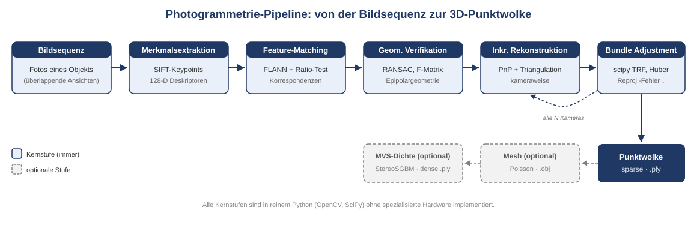
Der vorliegende Beitrag ist die Fortsetzung: Er nimmt jeden dieser Befunde, sucht die Ursache im Code, ändert den Code und misst nach. Dazu kommt eine Stufe, die in der früheren Fassung noch nicht existierte, nämlich die Rekonstruktion einer geschlossenen Oberfläche aus der dichten Punktwolke. Auch sie wird nicht nur beschrieben, sondern an dem gemessen, was der Datensatz beweisen kann.
Vier Fragen strukturieren die Arbeit.
F1: Welche der gefundenen Grenzen lassen sich mit vertretbarem Aufwand beheben? Abschnitt 4 beschreibt jede Änderung an der Stelle der Verarbeitungskette, an die sie gehört, zusammen mit der Messung, die sie ausgelöst hat.
F2: Was bringt jede einzelne Änderung? Abschnitt 6.2 schaltet die Änderungen einzeln zu, auf demselben Datensatz, mit derselben Programmfassung, und misst gegen die Ground Truth. Eine Verbesserung, die sich nur in der Summe zeigt, wäre kein Beleg für die einzelnen Eingriffe.
F3: Wie gut ist die Pipeline danach? Abschnitt 6.3 vergleicht den erreichten Zustand mit dem Ausgangszustand und mit COLMAP auf denselben Bildern, derselben CPU und mit derselben Merkmalszahl.
F4: Wie gut ist die rekonstruierte Oberfläche? Abschnitt 6.9 misst das Mesh gegen seine eigene Eingabe, gegen eine Referenzrekonstruktion und photometrisch gegen die Ground-Truth-Posen, weil der Datensatz keine Referenzoberfläche mitliefert.
Der Beitrag versteht sich weiterhin als Erfahrungsbericht mit Messwerten. Sein Ertrag liegt nicht in einem neuen Verfahren, sondern in der belegten Aussage, welche Fehler eine selbstgebaute SfM-Pipeline typischerweise macht, woran man sie erkennt und was ihre Behebung tatsächlich einbringt.
Alle Stufen beruhen auf dem Lochkameramodell. Ein Punkt X in Weltkoordinaten wird über die Rotation R und die Translation t in das Kamerasystem gebracht, perspektivisch geteilt und mit der Kalibriermatrix K in Pixel abgebildet:
xcam = R X + t, (xn, yn) = (xcam/zcam, ycam/zcam), K = [[f, 0, cx], [0, f, cy], [0, 0, 1]].
Im Bundle Adjustment kommt eine radiale Verzeichnung nach Brown-Conrady mit zwei Koeffizienten hinzu. Mit r² = xn² + yn² und d = 1 + k1r² + k2r⁴ lautet die Projektion u = f · xn · d + cx und v = f · yn · d + cy. Das Kamerazentrum in Weltkoordinaten ist C = −RTt.
Monokulares SfM bestimmt Geometrie nur bis auf eine Ähnlichkeitstransformation. Jeder Vergleich mit einer Referenz muss diese sieben Freiheitsgrade zuerst binden; Abschnitt 5.4 beschreibt, wie das geschieht.
Zwei Ansichten desselben Punktes sind über die Fundamentalmatrix F verknüpft: x2T F x1 = 0. Bei bekannter Kalibrierung geht F in die Essential-Matrix E = KTFK über, aus der die Cheiralitätsbedingung eine von vier möglichen relativen Posen auswählt.
Liegt die Szene in einer Ebene, versagt dieser Weg. Eine Homographie H erklärt dann alle
Korrespondenzen ebenso gut, F ist nur bis auf die Ebenenentartung bestimmt, und die daraus
abgeleitete Rotation ist beliebig. Die Standardantwort besteht darin, den Fall zu erkennen
und stattdessen H zu zerlegen: decomposeHomographyMat liefert bis zu vier Lösungen
(R, t, n), von denen die Forderung nach positiver Tiefe in beiden Kameras und nach einer
zur ersten Kamera zeigenden Ebenennormale die richtige auswählt. Abschnitt 4.4 setzt das
um, Abschnitt 6.7 misst es.
Sind zwei Posen bekannt, ergibt sich ein 3D-Punkt als Schnitt zweier Sehstrahlen, berechnet über die direkte lineare Transformation. Entscheidend für die Qualität ist der Winkel zwischen den Strahlen: Für zwei Kameras mit Basislinie b im Abstand Z und einem Messrauschen σ gilt näherungsweise σZ/Z ≈ σ / (f · sin α). Bei kleinem Winkel wandert der Punkt entlang der Sichtachse.
Ein Track ist die Menge aller Bildmessungen desselben Oberflächenpunktes. Verbindet man die verifizierten Zuordnungen transitiv, so ist jede Zusammenhangskomponente des Korrespondenzgraphen ein Track. Seine Länge, also die Zahl der Kameras, die ihn sehen, entscheidet darüber, wie stark er die Rekonstruktion versteift: Ein Punkt aus zwei Ansichten ist durch zwei Strahlen genau festgelegt und kann keinen Fehler mehr anzeigen, ein Punkt aus fünf Ansichten bindet fünf Kameras aneinander. Abschnitt 4.6 baut diesen Graphen explizit auf.
Das Bundle Adjustment (BA) optimiert Kameraposen, 3D-Punkte und die gemeinsame Intrinsik zugleich [11] und minimiert
E = Σ(i,j) ρ( ‖ π(K, Ri, ti, Xj) − xij ‖² )
über alle tatsächlich gemessenen Beobachtungen (i, j), mit einer robusten Verlustfunktion ρ. Das Problem ist groß, aber dünn besetzt, denn eine Beobachtung hängt nur von ihrer Kamera, ihrem Punkt und der gemeinsamen Intrinsik ab.
Zwei Eigenschaften des Lösers sind für diesen Beitrag zentral. Erstens mischt der Parametervektor Größenordnungen: Rotationskomponenten und Punktkoordinaten liegen bei 1, eine Brennweite bei mehreren Tausend. Ein Verfahren, das alle Parameter gleich behandelt, bewegt die Brennweite dann nur in winzigen relativen Schritten. Zweitens entscheidet das Abbruchkriterium darüber, ob überhaupt gerechnet wird: Wird der Lauf beendet, sobald die Schrittweite klein ist, kann er lange vor dem Minimum stehen bleiben. Beides war in der früheren Fassung als Ursache nachgewiesen worden; Abschnitt 4.7 beschreibt die Abhilfe.
Aus einer Punktwolke mit orientierten Normalen eine geschlossene Fläche zu gewinnen, ist ein eigenes Problem. Die Screened Poisson Surface Reconstruction [17] fasst es als Randwertaufgabe auf: Gesucht ist eine Indikatorfunktion χ, deren Gradient möglichst gut mit dem aus den Normalen gebildeten Vektorfeld übereinstimmt, gelöst über einem Oktalbaum. Die Oberfläche ist anschließend eine Niveaumenge von χ. Das Verfahren ist robust gegen Rauschen und liefert stets eine geschlossene Fläche, was zugleich sein Hauptproblem ist: Wo keine Daten liegen, erfindet der Löser Geometrie. Abschnitt 4.9 beschreibt, wie diese Phantomflächen wieder entfernt werden, und Abschnitt 6.9 beziffert, wie viel davon übrig bleibt.
Zwei Alternativen sind implementiert. Das Ball-Pivoting-Verfahren [nach Bernardini et al.] rollt eine Kugel über die Punkte und verbindet je drei, die sie zugleich berührt; es interpoliert die Punkte exakt und erfindet nichts, lässt aber Löcher, wo die Abtastung zu dünn ist. Alpha-Shapes verallgemeinern die konvexe Hülle und eignen sich für einfache, gut abgetastete Formen.
Die inkrementelle Bauform geht auf Photo Tourism [12] zurück und ist in COLMAP [2] zu einem Referenzsystem ausgebaut. OpenMVG und AliceVision beziehungsweise Meshroom verfolgen dieselbe Grundstruktur. Der vorliegende Beitrag tritt nicht in Konkurrenz zu diesen Systemen; er benutzt COLMAP als Maßstab.
Die Formulierung „selbst gebaute Pipeline” verlangt eine genaue Abgrenzung, denn SIFT, FLANN, RANSAC und Poisson sind etablierte Verfahren, deren Implementierungen niemand ohne Not neu schreibt. Die Arbeitsteilung ist unverändert die der früheren Fassung: Aus den Bibliotheken stammen die numerischen Primitive, selbst geschrieben ist alles, was diese Primitive zu einer Rekonstruktion verbindet, sowie das vollständige Fehlermodell des Bundle Adjustment.
| Stufe | Aus Bibliotheken | Eigener Python-Code |
|---|---|---|
| Intrinsik | PIL für den EXIF-Zugriff | drei EXIF-Wege mit Plausibilitätsprüfung, Brennweitensuche über Kandidaten |
| Merkmale | cv2.SIFT_create |
Bildladen mit EXIF-Rotation, Backend-Auswahl, inhaltsbasierte Zwischenspeicherung |
| Matching | cv2.FlannBasedMatcher, cv2.kmeans |
Ratio-Test, Cross-Check, Wahl der Kandidatenpaare, parallele Paarschleife mit paarweisem Zufallsstartwert |
| Geometrische Verifikation | findFundamentalMat, findEssentialMat, findHomography, recoverPose, decomposeHomographyMat |
Hartley-Normierung, H/F-Konkurrenz, Auswahl der Homographie-Lösung über Cheiralität, Zusammenhangskomponenten per Union-Find |
| Tracks | kein Bibliotheksaufruf | transitiver Trackgraph per Union-Find, Auflösung widersprüchlicher Komponenten |
| Inkrementelle Rekonstruktion | cv2.triangulatePoints, solvePnPRansac, solvePnPRefineLM, cv2.Rodrigues |
Startpaarwahl, Registrierungsreihenfolge, Annahmekriterien, Ausreißerentfernung, Retriangulation, geometrischer Schleifenschluss |
| Bundle Adjustment | scipy.optimize.least_squares (TRF), scipy.sparse |
Parametrisierung, Residuum mit Brown-Conrady, Jacobi-Struktur, analytische Parameterskalierung, adaptive Huber-Skala, Divergenzschutz |
| Dichte Rekonstruktion | cv2.StereoSGBM, stereoRectify, reprojectImageTo3D |
Paarauswahl nach vorhergesagter Disparität, Ableitung des Suchfensters aus der Szene, Arbeitsauflösung nach Speicherbudget, Szenenbegrenzung |
| Oberfläche | Open3D: Normalen, Screened Poisson, Ball-Pivoting, Alpha-Shapes | Punktabstand als Längeneinheit, Filter mit Sicherung, Ausdünnung per Bisektion, kamerabasierte Normalenorientierung, Entfernen erfundener Flächen, Bereinigung, Prüfbericht |
| Ausgabe und Diagnose | matplotlib | binärer PLY-Writer, Kameraexport, 19 Typen von Diagnosebildern |
Der gesamte Projektcode ist Python. Tab. 2 zählt 13.769 Zeilen, davon 2.656 für die Oberflächenstufe, 1.586 für die Visualisierung und 560 für die Anbindung von COLMAP, das nur als Vergleichsmaßstab dient. Auf die in diesem Beitrag beschriebenen Änderungen entfallen rund 900 neue Zeilen in vier Modulen.
| Modul | Zeilen | Aufgabe |
|---|---|---|
run_sfm.py |
2.083 | Kommandozeile, Ablaufsteuerung, Checkpointing, Export |
sfm/mesh/* |
2.656 | Vorbereitung, Poisson, Bereinigung, Prüfung |
sfm/reconstruction.py |
1.681 | inkrementelle Rekonstruktion, Tracks, Ausreißer |
sfm/visualizer.py |
1.586 | 19 Typen von Diagnosebildern |
sfm/feature_matching.py |
1.267 | Matching-Strategien, parallele Paarschleife |
sfm/bundle_adjustment.py |
897 | Residuen, Jacobi-Struktur, Konditionierung |
sfm/geometric_verification.py |
413 | F, E, Homographie, Pose |
sfm/mvs.py |
405 | dichte Rekonstruktion über Stereo |
sfm/focal_search.py |
263 | Brennweitensuche über Kandidaten |
sfm/loop_closure.py |
234 | geometrischer Schleifenschluss |
sfm/exif_focal.py |
216 | Brennweite aus EXIF, drei Wege |
sfm/tracks.py |
194 | transitiver Trackgraph |
| übrige Module | 1.874 | Merkmale, COLMAP-Anbindung, Punktwolke, Hilfsfunktionen |
| gesamt | 13.769 |
Dieser Abschnitt geht die Verarbeitungskette entlang und beschreibt an jeder Stufe zuerst das Verfahren und dann die Änderung, die die frühere Messung ausgelöst hat. Die Wirkung steht in Abschnitt 6.
| Nr. | Befund aus der früheren Fassung | Ursache im Code | Änderung | Stand |
|---|---|---|---|---|
| 1 | Brennweite aus max(W, H) geraten, 47 % Fehler |
nur ein EXIF-Feld gelesen, sonst Heuristik ohne Prüfung | sfm/exif_focal.py mit drei EXIF-Wegen und Plausibilitätsprüfung; Brennweitensuche startet selbsttätig, wenn nichts Besseres vorliegt; --focal, --intrinsics |
behoben |
| 2 | Reprojektionsfehler hoch und als Qualitätsmaß blind | Fehler wurde erst nach dem Exportfilter berichtet | beide Werte werden berichtet, vor und nach dem Filter; die prinzipielle Blindheit der Kennzahl bleibt und wird durch die Punktzahl ergänzt | teilweise |
| 3 | Bundle Adjustment bewegt nichts, Abbruch auf xtol |
einheitliche Parameterskalierung, Toleranz 1e−4 | analytische Skalierung je Parameterblock, Toleranz 1e−6, ausdrückliche Warnung bei Stillstand, --ba-ftol/-xtol/-gtol |
behoben |
| 4 | Ergebnisse nicht reproduzierbar, bis 57 % Streuung | cv2.setRNGSeed nirgends aufgerufen |
--seed setzt OpenCV, NumPy und random; im Matching bekommt jedes Paar seinen eigenen abgeleiteten Startwert |
behoben |
| 5 | Tracks zu kurz, 2,70 gegen 4,69 bei COLMAP | Beobachtungen entstanden nur entlang des triangulierenden Paares | sfm/tracks.py schließt die Zuordnungen transitiv; Ergänzung und Verschmelzung vor jedem Bundle Adjustment |
teilweise |
| 6 | Matching ist die Skalierungsgrenze | serielle Paarschleife, quadratische Paarzahl | Thread-Pool über die Paare mit paarweise gesetztem Zufallsstartwert, --match-workers; die quadratische Zahl der Paare bleibt |
teilweise |
| 7 | Ohne Schleifenschluss akkumuliert Spannung | Schleifenschluss nur über Bildretrieval, ohne PyTorch nicht lauffähig | sfm/loop_closure.py schlägt aus den Posen Paare vor, matcht und verifiziert sie gezielt und rekonstruiert erneut |
behoben |
| 8 | Planare Szenen werden verworfen | Paar mit hohem Homographie-Anteil wurde übersprungen | Zerlegung der Homographie mit Auswahl über Cheiralität; das Paar bleibt nutzbar, wird aber nicht als Startpaar zugelassen | behoben |
| 9 | Randfälle unreif | unlesbares Bild bricht ab, Backends mit rohem Traceback, inhaltsblinder Cache | unlesbare Bilder werden übersprungen, fehlende Backends melden sich mit Installationshinweis, der Cache-Schlüssel verwendet den Bildinhalt | behoben |
Die Pipeline liest alle Bilder eines Verzeichnisses, wendet die EXIF-Orientierung an und schätzt daraus eine gemeinsame Kalibriermatrix. Der Hauptpunkt wird auf die Bildmitte gesetzt.
Befund. Für die Brennweite wurde bisher genau ein EXIF-Feld gelesen, die kleinbildäquivalente Brennweite. Fehlte es, griff die Heuristik f = max(W, H), auf dem Buddha-Datensatz 2.736 px gegen wahre 1.860,9 px, also 47,0 % zu viel. Dieser Wert ging in die Startpose, in jede Triangulation und in jedes PnP ein.
Änderung. Die Brennweitenbestimmung ist in ein eigenes Modul gewandert
(sfm/exif_focal.py) und probiert drei Wege in der Reihenfolge ihrer Verlässlichkeit. Der
erste liest die kleinbildäquivalente Brennweite und rechnet sie über die Sensordiagonale
von 43,27 mm in Pixel um. Der zweite verwendet die Brennweite in Millimetern zusammen mit
der Auflösung der Sensorebene, also dem vom Hersteller angegebenen Pixelraster, und
skaliert, wenn das geladene Bild nicht die im EXIF vermerkte Größe hat. Der dritte
kombiniert die Brennweite in Millimetern mit einer Sensorbreite aus einer kurzen Tabelle
gebräuchlicher Kameras. Jeder Weg wird verworfen, wenn der berechnete Wert einen
unplausiblen Bildwinkel ergibt, also außerhalb von 5° bis 150° diagonal liegt; eine grob
falsche Brennweite ist schlechter als keine. Welcher Weg gegriffen hat, steht im Protokoll
und in der exportierten Kameradatei.
Änderung. Liefert kein EXIF-Weg einen Wert und gibt der Aufruf keine Kalibrierung vor,
startet die Pipeline von sich aus die Brennweitensuche, statt die Heuristik zu verwenden.
Die Suche vergleicht Kandidatenbrennweiten daran, wie viele Zweibild-Korrespondenzen die
Annahmekriterien überstehen, und nicht am Reprojektionsfehler: Die frühere Fassung hatte
gemessen, dass die Punktzahl scharf und eindeutig beim wahren Wert liegt, während der
Reprojektionsfehler falsche Werte nicht ordnet. Die Schalter --focal, --intrinsics und
--no-focal-search behalten die Kontrolle beim Anwender.
Für jedes Bild werden bis zu --n_features SIFT-Merkmale [4] mit 128-dimensionalen
Deskriptoren detektiert. Der Kontrastschwellwert liegt bei 0,02 statt bei den 0,04 der
OpenCV-Voreinstellung, was auf hochaufgelösten Bildern deutlich mehr schwach kontrastierte
Merkmale liefert und dem Wert entspricht, den COLMAP verwendet.
Der Referenzlauf findet 468.252 Merkmale, im Mittel 6.989 je Bild, und benötigt dafür 45,6 s. Bei 31 der 67 Bilder begrenzt dabei der Parameter und nicht die Szene: Sie erreichen die Obergrenze von 8.000.
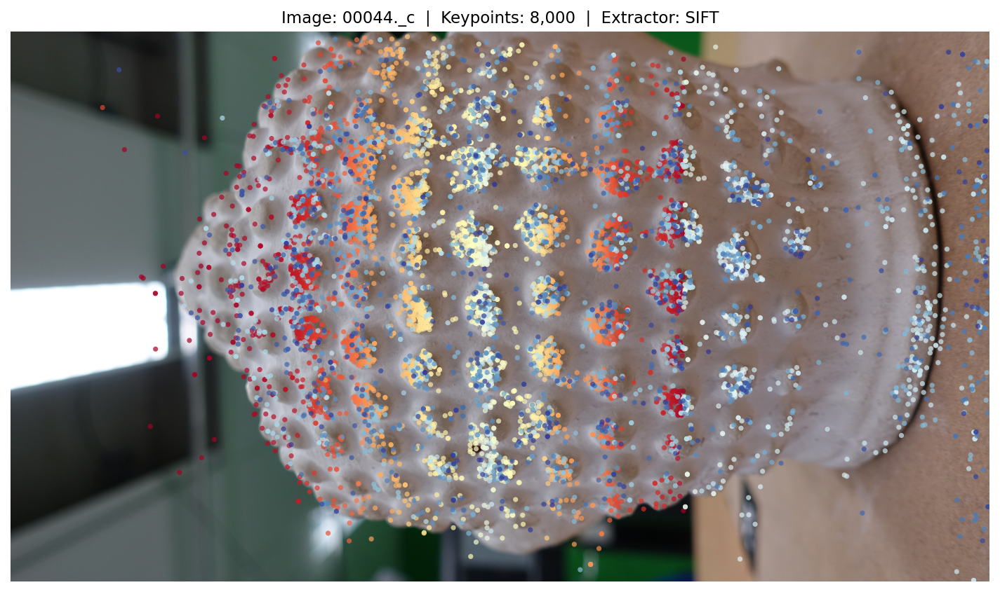
Änderung. Merkmale und Matches liegen weiterhin in einem Checkpoint, aber der Schlüssel dieses Caches wird jetzt aus dem Bildinhalt gebildet und nicht mehr aus Dateiname und Dateigröße. Der frühere Schlüssel war nachweislich unsicher: Zwei verschiedene Szenen mit gleichen Dateinamen und gleicher Dateigröße führten zu einem Cache-Treffer, und die zweite Szene wurde mit den Merkmalen der ersten rekonstruiert, ohne Warnung.
Korrespondenzen findet eine FLANN-basierte Suche [13] nach den beiden nächsten Nachbarn, gefolgt vom Ratio-Test nach Lowe [4] und einem Cross-Check. Erschöpfendes Matching prüft alle N(N−1)/2 Paare und ist damit quadratisch in der Bildzahl.
Befund. Das Matching war mit 91 % der Laufzeit die Skalierungsgrenze und zugleich 4,9-mal langsamer als COLMAP auf derselben CPU, bei gleicher Paarzahl und gleichen Deskriptoren. Der Unterschied lag nicht im Verfahren, sondern darin, dass die Paarschleife seriell lief, während COLMAP alle Kerne nutzte.
Änderung. Die Schleife läuft jetzt über einen Thread-Pool; die teure Arbeit steckt in den FLANN-Aufrufen, also in OpenCV-C++-Code, der die GIL freigibt. Damit die Parallelisierung nicht die Reproduzierbarkeit kostet, bekommt jedes Paar seinen eigenen Zufallszahlen-Startwert, abgeleitet aus seiner Position in der Paarliste: FLANNs randomisierte kd-Bäume ziehen aus dem Zufallszahlengenerator von OpenCV, so dass das Ergebnis eines Paares sonst davon abhinge, wie viele Paare vorher bearbeitet wurden. Die Ergebnisse werden anschließend in serieller Paarreihenfolge zusammengesetzt, so dass die Ausgabe unabhängig von der Zahl der Threads ist.
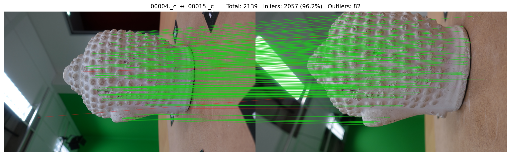
Jedes Bildpaar durchläuft vier Filter: eine Hartley-Normierung [14] der Pixelkoordinaten,
eine robuste Schätzung der Fundamentalmatrix mit USAC_MAGSAC [5], eine Konkurrenz
zwischen Homographie und Fundamentalmatrix nach dem Kriterium von Torr [15] und die
Zerlegung der Essential-Matrix über die Cheiralitätsbedingung. Ein Union-Find-Verfahren
prüft anschließend die Zusammenhangskomponenten des Szenengraphen.
Befund. Erklärte eine Homographie mehr als 85 % der Inlier, galt das Paar als planar und wurde verworfen. Das vermeidet eine falsche Pose, verliert aber die Daten; auf einer überwiegend planaren Szene zerfällt der Bildgraph.
Änderung. Statt das Paar zu verwerfen, wird die Homographie zerlegt [19]. Von den bis zu vier Lösungen scheiden diejenigen aus, deren Ebenennormale von der ersten Kamera wegzeigt; unter den übrigen gewinnt die Lösung, die die meisten Korrespondenzen vor beide Kameras legt. Das Paar bleibt nutzbar, wird aber als planar markiert und von der Startpaarwahl ausgeschlossen, weil ein planares Startpaar die Skalenbasis der gesamten Rekonstruktion verdirbt. Abschnitt 6.7 misst den Unterschied auf einer synthetischen Ebene, weil der Buddha-Datensatz kein planares Paar enthält.
Die Rekonstruktion wächst kameraweise. Als Startpaar dient das Paar mit dem größten Produkt aus Basislinie und Inlier-Zahl unter allen nicht-planaren Paaren mit mindestens 5° medianem Triangulationswinkel. Anschließend registriert die Pipeline iterativ das Bild mit den meisten 2D-3D-Korrespondenzen über PnP mit RANSAC [10] und einer Levenberg-Marquardt-Verfeinerung. Neue Punkte werden nur übernommen, wenn Tiefe, Triangulationswinkel und Reprojektionsfehler in beiden Kameras die Schwellen einhalten.
Befund. Ohne Schleifenschluss akkumuliert die Rekonstruktion Spannung, weil jede neue Kamera an den bestehenden Verbund gehängt wird und nie geprüft wird, ob zwei Kameras, die räumlich nebeneinander liegen, tatsächlich gemeinsame Beobachtungen haben. Zusätzlich endete der Lauf, sobald kein Bild mehr genügend 2D-3D-Korrespondenzen hatte; auf einer ausgedünnten Bildmenge blieben so 6 von 20 Kameras unregistriert. Der vorhandene Schleifenschluss setzt ein Retrieval-Netz voraus und war auf der Messmaschine nicht lauffähig.
Änderung. Nach der ersten Rekonstruktion sagen die Posen selbst, welche Bilder einander
sehen müssten. Ein neues Modul (sfm/loop_closure.py) schlägt Paare vor, deren optische
Achsen weniger als 45° auseinanderliegen und deren Kamerazentren näher beieinander sind als
60 % des mittleren Abstands zur Objektmitte, für die aber keine verifizierte Kante
existiert. Bilder, die gar nicht registriert wurden, erhalten die komplementäre Behandlung:
Ihre stärksten Rohzuordnungen zu registrierten Bildern werden mit gelockerter
Ratio-Schwelle erneut gematcht. Beide Mengen sind klein, typischerweise einige Dutzend
Paare, so dass das gezielte Matching einen Bruchteil der erschöpfenden Stufe kostet. Alle
vorgeschlagenen Paare durchlaufen die gewöhnliche geometrische Verifikation; nichts wird auf
Zuruf geglaubt. Anschließend läuft die Rekonstruktion mit dem erweiterten Szenengraphen
erneut, und das Ergebnis wird nur übernommen, wenn es nicht schlechter ist als das erste.
Befund. Die mittlere Tracklänge lag bei 2,70 gegen 4,69 bei COLMAP auf denselben Bildern, und mehr als zwei Drittel aller Punkte ruhten auf genau zwei Ansichten. Der Grund war, dass Beobachtungen nur entlang des Paares entstanden, das sie trianguliert hatte: Wenn Bild A mit B und B mit C auf derselben Ecke übereinstimmen, lernte die Pipeline A-B und B-C getrennt und schloss daraus nie A-B-C.
Änderung. Ein neues Modul (sfm/tracks.py) schließt die verifizierten Zuordnungen
transitiv per Union-Find über Paare aus Bildindex und Merkmalsindex. Jede
Zusammenhangskomponente ist ein Track. Komponenten, die zwei Merkmale desselben Bildes
enthalten, sind in sich widersprüchlich, denn ein Oberflächenpunkt kann in einem Bild nicht
zweimal erscheinen; das betroffene Bild wird aus der Komponente entfernt statt die
Komponente zu glauben. Vor jedem Bundle Adjustment ergänzt die Rekonstruktion für jeden
3D-Punkt alle Beobachtungen, die sein Track in bereits registrierten Bildern hat und die
den Reprojektionstest bestehen. Die frühere, paarweise Ergänzung erreichte pro Aufruf nur
einen Schritt der Kette und brauchte ein bereits triangulierten Ende; der Trackgraph
schließt die Kette in einem Schritt.
Nach jeweils fünf neu registrierten Kameras und am Ende optimiert ein Bundle Adjustment
alle Parameter gemeinsam, gelöst mit scipy.optimize.least_squares im
Trust-Region-Reflective-Verfahren über einer selbst aufgebauten dünnbesetzten
Jacobi-Struktur, mit Huber-Verlust und einer aus der Streuung der Startresiduen
abgeleiteten Skala.
Befund. Das Bundle Adjustment bewegte nichts. Über alle Runden hinweg verbesserte es
den Fehler um höchstens 0,021 px, die Brennweite änderte sich um exakt null, und jede Runde
endete auf dem Schrittweitenkriterium xtol, während der Restfehler noch bei mehreren
Pixeln lag. Ein kontrolliertes Experiment mit synthetischen Korrespondenzen zeigte, dass
der Löser die Brennweite selbst dann nicht zurückholte, wenn Struktur und Posen exakt
vorgegeben waren und der Restfehler bei 189,5 px lag; mit skaliertem Parametervektor und
abgesenkten Toleranzen fand derselbe Löser auf denselben Daten eine Lösung mit 6,9 % statt
47 % Brennweitenfehler.
Änderung. Der Parametervektor wird nun analytisch skaliert, jeder Block mit seiner
eigenen natürlichen Einheit: die Brennweite und der Hauptpunkt mit dem Startwert der
Brennweite, die Verzeichnungskoeffizienten und die Rotationskomponenten mit eins, die
Translationen und Punkte mit der aus ihnen selbst gemessenen Szenengröße. Anders als die
aus der Jacobi-Matrix abgeleitete Skalierung kostet das nichts und ändert sich nicht von
Iteration zu Iteration. Die Toleranzen liegen bei 1e−6 statt 1e−4 und sind über die
Kommandozeile einstellbar. Zusätzlich warnt der Löser ausdrücklich, wenn er auf xtol
abbricht, während der Restfehler noch groß ist: Das ist ein Stillstand und keine
Konvergenz, und die frühere Fassung hatte diesen Unterschied nicht sichtbar gemacht.
Änderung. Die vom Bundle Adjustment verfeinerte Brennweite und der Hauptpunkt werden jetzt in die Kameraverwaltung zurückgeschrieben. Zuvor wurden nur die Verzeichnungskoeffizienten übernommen, so dass jede spätere Rechnung weiter mit den unverfeinerten Werten arbeitete.
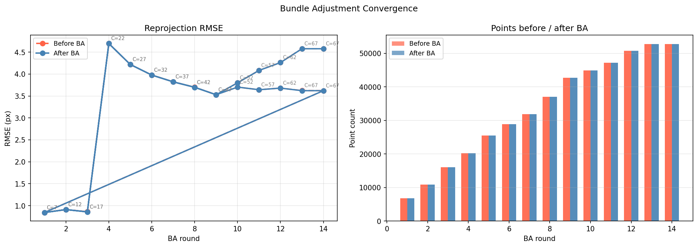
Befund. Vier byte-identische Aufrufe registrierten 13, 13, 14 und 6 Kameras. Die
Ursache war, dass cv2.setRNGSeed nirgends aufgerufen wurde und damit jedes RANSAC aus dem
prozessglobalen Zufallszahlengenerator von OpenCV zog.
Änderung. Ein --seed setzt die Generatoren von OpenCV, NumPy und der
Standardbibliothek zu Beginn des Laufs; im Matching bekommt zusätzlich jedes Paar seinen
eigenen abgeleiteten Startwert. Abschnitt 6.4 prüft nicht, ob die Ergebnisse ähnlich sind,
sondern ob sie bitgleich sind.
Die dichte Stufe rektifiziert ausgewählte Stereopaare, berechnet Disparitäten mit
StereoSGBM [16] und trianguliert sie zu einer dichten Wolke; ihr Punktbudget ist jetzt über
--max-dense-points erreichbar, statt wie zuvor stillschweigend bei 500.000 zu
beschneiden.
Die Oberflächenstufe ist neu und in sfm/mesh/ untergebracht. Sie läuft zuletzt und ist
strikt additiv: Die dünne und, falls erzeugt, die dichte Punktwolke liegen bereits auf der
Platte, bevor sie beginnt, und werden nie verändert. Zusätzlich schreibt sie die
vorbereitete Wolke, also genau die gefilterte, ausgedünnte und mit Normalen versehene
Punktmenge, die in die Oberflächenrekonstruktion geht; ohne sie ließe sich ein Mesh weder
nachvollziehen noch reproduzieren. Jeder Fehler wird abgefangen und als gescheitertes
Ergebnis zurückgegeben, damit die Stufe niemals einen bereits erfolgreichen Lauf zerstört.
Die Stufe gliedert sich in fünf Schritte.
Vorbereitung. Nicht endliche und doppelte Punkte fallen weg. Danach wird einmal ein robuster Punktabstand bestimmt, der Median des Abstands zum nächsten Nachbarn, gemessen auf einer begrenzten Zufallsstichprobe. Dieser Abstand ist die natürliche Längeneinheit der Rekonstruktion, und jede weitere Länge in der Stufe, also jeder Radius, jede Trimmdistanz, jede Lochgröße und jede Qualitätsschwelle, wird als Vielfaches davon ausgedrückt statt als absolute Konstante oder als Bruchteil der Bounding-Box. Damit verhält sich dieselbe Einstellung auf einer in Metern skalierten und auf einer in willkürlichen SfM-Einheiten skalierten Wolke gleich. Es folgen eine statistische Ausreißerentfernung und eine Radiusfilterung mit dichteabhängiger Nachbarzahl, beide mit einer Sicherung: Würde ein Filter mehr als einen konfigurierten Anteil der Wolke löschen, wird er gelockert und eine Warnung ausgegeben, statt die Daten stillschweigend zu vernichten. Anschließend wird die Wolke per Voxelgitter auf eine Zielpunktzahl ausgedünnt, wobei die Voxelgröße über eine Bisektion gesucht wird; eine geschlossene Formel aus Volumen und Punktzahl trifft nicht zu, weil die Punkte auf einer Fläche liegen und nicht im Raum verteilt sind.
Normalen. Screened Poisson braucht orientierte Normalen. Die Richtung wird nicht über das übliche Spannbaumverfahren geraten, sondern aus der Aufnahmegeometrie genommen: Jede Normale zeigt zu demjenigen Kamerazentrum, das ihrem Punkt am nächsten liegt. Diese Information hat eine SfM-Pipeline ohnehin, sie ist billiger und sie ist verlässlicher als die Heuristik. Nur wenn keine Kamerazentren vorliegen, greift das Spannbaumverfahren, und das Protokoll sagt es.
Oberflächenrekonstruktion. Voreingestellt ist Screened Poisson [17]; Ball-Pivoting [6] und Alpha-Shapes stehen daneben, mit aus dem Punktabstand abgeleiteten Radien beziehungsweise Alpha-Werten.
Entfernen erfundener Flächen. Poisson liefert immer eine geschlossene Fläche, auch dort, wo die Wolke nichts stützt. Drei Kriterien entfernen diese Phantomgeometrie: die von Open3D mitgelieferte Stützdichte je Knoten, geschwellt an einem Quantil; der Abstand zur Eingabewolke, wobei ein Knoten, der weiter als k Punktabstände von jedem Eingabepunkt entfernt liegt, vom Löser erfunden wurde; und als billige Rückfallebene ein Zuschnitt auf die Bounding-Box mit Rand. Der zweite ist der wirksame, weil er absolut misst statt relativ. Die drei Masken werden gesammelt und in einem einzigen Aufruf angewandt, da jeder Aufruf die Knotennummerierung neu vergibt.
Bereinigung und Nachbearbeitung. Entartete Dreiecke, doppelte Knoten und nicht referenzierte Knoten fallen weg, kleine Komponenten unterhalb eines Anteils an der Gesamtfläche ebenso. Löcher bis zu einer aus dem Punktabstand abgeleiteten Größe werden geschlossen, optional wird geglättet und dezimiert, und die Knotenfarben werden aus der Wolke übertragen. Zum Schluss prüft die Stufe das Ergebnis selbst und schreibt einen Bericht, dessen Kennzahlen Abschnitt 6.9 verwendet.
Ausgewertet wird der Datensatz „Buddha” aus dem AliceVision-Projekt: 67 Aufnahmen einer genoppten Buddha-Statue, 2736 × 1540 Pixel, mit Ground-Truth-Projektionsmatrix je Bild. Aus diesen Matrizen ergibt sich für alle Bilder dieselbe Brennweite von 1.860,90 px und ein Hauptpunkt bei (1.368,8 / 774,3) px. Die Aufnahmen decken den vollen Azimutbereich und Höhenwinkel von −18° bis +86° ab; es handelt sich nicht um eine Ringaufnahme, sondern um eine frei geführte Abtastung der oberen Halbkugel, und die Reihenfolge der Dateinamen entspricht keiner Reihenfolge im Raum. Für Messungen an kleineren Bildmengen dienen gleichmäßig ausgedünnte Teilmengen mit 20 Bildern.
Der Datensatz liefert keine Referenzoberfläche. Was er beweisen kann, sind Kameraposen und Kalibrierung; was er nicht beweisen kann, ist ein Abstand der rekonstruierten Fläche zur Wirklichkeit in Millimetern. Abschnitt 5.5 zieht daraus die Konsequenzen für die Bewertung der Mesh-Stufe.
| Gruppe | Konfiguration | Verwendung |
|---|---|---|
| Vorher/Nachher-Reihe | 67 Bilder, 8.000 Merkmale, gemeinsamer Checkpoint, je eine Zeile pro Änderung | Abschnitte 6.2 und 6.3 |
| Referenzlauf | 67 Bilder, 8.000 Merkmale, alle Änderungen, dichte Stufe und Oberfläche, mit Visualisierung | Abbildungen und Abschnitt 6.9 |
| Referenz mit GT-Kalibrierung | wie der Referenzlauf, aber mit --intrinsics aus der Ground Truth |
Bezugswolke für die Mesh-Bewertung |
| Wiederholungsreihe | 20 Bilder, drei identische Aufrufe | Abschnitt 6.4 |
| Schleifenschluss-Vergleich | 20 Bilder, mit und ohne | Abschnitt 6.5 |
| synthetische Prüfungen | planare Szene, erzeugte EXIF-Dateien | Abschnitte 6.7 und 6.8 |
Alle Vorher/Nachher-Vergleiche stammen aus derselben Programmfassung. Der Zustand
„vorher” entsteht nicht aus einem älteren Commit, sondern über Schalter, die die alten
Voreinstellungen wiederherstellen (--no-focal-search, --ba-no-param-scaling mit den
Toleranzen 1e−4, --no-track-completion --no-global-tracks,
--no-geometric-loop-closure). Damit kann kein anderer Unterschied als die untersuchte
Änderung eine Abweichung erklären.
Alle Konfigurationen der Vorher/Nachher-Reihe teilen sich außerdem einen Checkpoint für Merkmale und Matches. Keine der Änderungen berührt Merkmalsextraktion oder Matching, so dass jede Zeile bitgleiche Merkmale und Zuordnungen verarbeitet; damit scheidet auch Matching-Rauschen als Erklärung aus. Die in dieser Reihe berichteten Laufzeiten enthalten deshalb die Matching-Stufe nur in der ersten Zeile; für Laufzeitaussagen dient der vollständige Lauf aus Abschnitt 6.6.
| Element | Wert |
|---|---|
| Betriebssystem | Windows 10, Build 10.0.26200 |
| Prozessor | AMD64 Family 25 Model 80, 16 Threads, ohne CUDA |
| Python | 3.10.6 |
| OpenCV | 4.13.0 |
| NumPy, SciPy, Open3D | 2.2.6, 1.15.3, 0.19.0 |
| COLMAP | 4.1.1 ohne CUDA |
| nicht verfügbar | torch, kornia, pyceres, poselib, faiss |
Weil torch, kornia, pyceres und poselib fehlen, sind die Pfade für SuperPoint, DISK, LoFTR, DINOv2-Retrieval sowie der pyceres-Solver nicht gemessen. Sie melden sich mit einem Installationshinweis, wenn sie angefordert werden.
Vollständigkeit ist der Anteil registrierter Kameras an den Eingabebildern.
Reprojektionsfehler ist der euklidische Abstand zwischen gemessenem und zurückprojiziertem Bildpunkt. Er wird ab dieser Fassung zweimal berichtet: über alle Beobachtungen der Rekonstruktion und über diejenigen, die den Exportfilter überstanden haben. Die frühere Fassung nannte nur den zweiten Wert, und da der Filter genau die widersprüchlichen Beobachtungen entfernt, schmeichelte er sich selbst.
Posenfehler entstehen erst nach einer Ausrichtung. Da monokulares SfM skalenfrei ist, werden die geschätzten Kamerazentren zuerst über eine Sim(3)-Anpassung nach Umeyama [18] auf die Ground Truth gelegt. Der Positionsfehler ist danach der Abstand zur wahren Position, normiert auf die Ausdehnung der vollständigen Ground-Truth-Trajektorie; der Rotationsfehler ist der geodätische Winkel zwischen geschätzter und wahrer Orientierung nach Abzug der globalen Drehung.
Tracklänge ist die Zahl der Beobachtungen je 3-D-Punkt.
Ein Hinweis zur Vergleichbarkeit mit COLMAP: Die eigene Pipeline mittelt den Reprojektionsfehler über Beobachtungen, COLMAP schreibt je Punkt einen bereits über dessen Track gemittelten Fehler. Beide Größen werden getrennt benannt und nicht in derselben Zeile verrechnet.
Ohne Referenzoberfläche zerfällt die Bewertung des Mesh in drei Familien, geordnet nach dem, was sie beweisen.
Photometrische Probe unter den Ground-Truth-Posen. Die Posen sind bekannt, also lässt sich jeder Oberflächenpunkt in jede Ansicht projizieren, die ihn sieht, und die dort gemessene Farbe vergleichen. Ein Punkt auf der wahren Oberfläche eines matten Objekts zeigt aus allen Richtungen dieselbe Farbe; ein Punkt vor oder hinter der Fläche trifft in jeder Ansicht auf etwas anderes, und die Farben gehen auseinander. Verdeckungen werden auf dem Mesh selbst per Strahlverfolgung aufgelöst, und ein Punkt zählt erst ab drei Ansichten. Berichtet wird die Standardabweichung der Farbe über die Ansichten, zusammen mit einer Kontrolle: dieselbe Größe für dieselben Punkte, entlang ihrer Normalen um zwei und um vier Punktabstände verschoben. Ohne diese Kontrolle hätte die Zahl keinen Maßstab, denn auch eine perfekte Fläche erzeugt auf einem texturierten Objekt Streuung.
Übereinstimmung mit einer Referenzrekonstruktion. Zusätzlich läuft die Pipeline mit vorgegebener Ground-Truth-Kalibrierung. Diese Rekonstruktion enthält den größten in der früheren Fassung gemessenen Fehler nicht mehr, und der Abstand des bewerteten Mesh zu ihrer Punktwolke trennt den Anteil der Meshing-Stufe vom Anteil der Rekonstruktion.
Treue zur eigenen Eingabe und Topologie. Abstand zwischen Oberfläche und der Wolke, aus der sie entstand, in beide Richtungen; Abdeckung der Wolke; Mannigfaltigkeit, Wasserdichtheit, Zahl der Komponenten, Euler-Charakteristik und Dreiecksqualität; und der Anteil der Fläche, den Poisson dort erfunden hat, wo keine Daten liegen. Diese Familie misst gegen die eigene Eingabe und wird ausdrücklich nicht als Genauigkeit gegen die Wirklichkeit ausgegeben.
Zur Erinnerung der Stand vor den Änderungen, gemessen auf denselben 67 Bildern: alle Kameras registriert, 38.332 Punkte, mittlere Tracklänge 2,69, Reprojektions-RMSE 2,12 px, Brennweitenfehler +47,0 %, Rotationsfehler im Median 7,76°, Positionsfehler 2,66 % der Szenenausdehnung. Diese Zeile stammt nicht aus der früheren Fassung, sondern aus der aktuellen Programmfassung mit abgeschalteten Änderungen; sie weicht daher in den Nachkommastellen von den dort berichteten Werten ab, weil zwischenzeitlich auch Voreinstellungen wie die SIFT-Kontrastschwelle angepasst wurden. Verglichen wird im Folgenden ausschließlich innerhalb dieser Reihe.
| Konfiguration | Kameras | Punkte | Beobachtungen | Tracklänge | RMSE (px) | Brennweitenfehler | Rotationsfehler | Positionsfehler | Rekonstruktion (s) |
|---|---|---|---|---|---|---|---|---|---|
| vorher | 67 | 38.332 | 103.176 | 2,69 | 2,117 | +47,03 % | 7,756° | 2,663 % | 34,5 |
| + Brennweite | 67 | 55.793 | 163.182 | 2,92 | 0,624 | +0,60 % | 0,159° | 0,056 % | 50,3 |
| + Löser | 67 | 39.773 | 107.708 | 2,71 | 2,139 | +47,06 % | 7,216° | 2,566 % | 627,3 |
| + Tracks | 67 | 36.042 | 101.056 | 2,80 | 2,164 | +47,03 % | 8,229° | 2,688 % | 59,5 |
| + Schleifenschluss | 67 | 38.332 | 103.176 | 2,69 | 2,117 | +47,03 % | 7,756° | 2,663 % | 123,4 |
| alle zusammen | 67 | 51.444 | 159.478 | 3,10 | 0,655 | +0,59 % | 0,174° | 0,057 % | 1.247,9 |
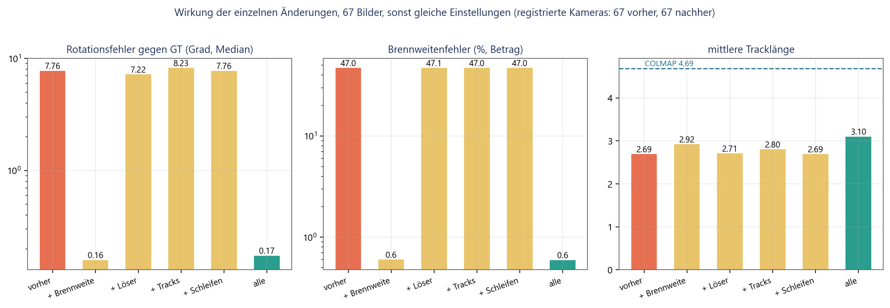
Vier Beobachtungen folgen daraus, und drei davon sind unbequem.
Erstens trägt die Brennweite fast die gesamte Verbesserung. Allein eingeschaltet senkt sie den Rotationsfehler von 7,76° auf 0,159°, also um den Faktor 49, den Brennweitenfehler von 47,0 % auf 0,60 % und den Reprojektionsfehler von 2,12 px auf 0,62 px. Zugleich steigt die Punktzahl um 46 % und die Zahl der Beobachtungen um 58 %, weil bei richtiger Brennweite deutlich mehr Triangulationen die Annahmekriterien überstehen. Die frühere Fassung hatte genau das an synthetischen Daten vorhergesagt: Die Zahl akzeptierter Punkte reagiert scharf auf die angenommene Brennweite. Hier bestätigt sich die Vorhersage an echten Bildern.
Zweitens bringt die bessere Konditionierung des Bundle Adjustment für sich genommen nichts und kostet viel. Der Rotationsfehler sinkt von 7,76° auf 7,22°, während die Rekonstruktion statt 34,5 s nun 627,3 s braucht, also das Achtzehnfache. Auch das ist konsistent mit dem kontrollierten Experiment der früheren Fassung: Solange die Brennweite falsch ist, hat das Bundle Adjustment nichts zu gewinnen, weil die Struktur bereits an diese Brennweite angepasst wurde. Der Löser rechnet dann nur länger an derselben falschen Antwort. Seinen Wert zeigt er erst zusammen mit einer brauchbaren Brennweite, und selbst dann ist er auf diesem Datensatz nicht messbar.
Drittens verlängert der Trackgraph die Tracks, ohne für sich genommen die Posen zu verbessern. Die mittlere Tracklänge steigt von 2,69 auf 2,80, die Punktzahl sinkt zugleich von 38.332 auf 36.042, weil Punkte, die derselbe Track sind, verschmelzen. Der Rotationsfehler verschlechtert sich von 7,76° auf 8,23°. Bei einer um 47 % falschen Brennweite ist das kein Widerspruch, sondern zu erwarten: Längere Tracks binden mehr Kameras an eine Struktur, die geometrisch verzerrt ist, und verteilen den Fehler damit gleichmäßiger, statt ihn zu beseitigen.
Viertens ändert der geometrische Schleifenschluss auf diesem Datensatz gar nichts. Alle 67 Kameras sind bereits registriert, und von den vorgeschlagenen Paaren übersteht keines die Verifikation mit zusätzlichem Nutzen; die Zeilen „vorher” und „+Schleifen” sind identisch. Das ist kein Argument gegen die Änderung, sondern eine Aussage über den Datensatz: Er ist dicht abgetastet und vollständig verbunden. Abschnitt 6.5 zeigt denselben Schalter auf einer ausgedünnten Bildmenge, wo er den Unterschied zwischen 14 und 20 registrierten Kameras ausmacht.
Alles zusammen ergibt 0,174° Rotationsfehler, 0,59 % Brennweitenfehler, 51.444 Punkte und eine mittlere Tracklänge von 3,10. Gegenüber der Brennweite allein ist der Rotationsfehler damit leicht schlechter (0,174° gegen 0,159°) und die Tracklänge deutlich besser (3,10 gegen 2,92). Wer nur auf den Posenfehler schaut, würde die übrigen Änderungen also nicht einschalten; wer eine steifere Struktur für spätere Stufen braucht, schon. Der Preis ist Rechenzeit: 1.248 s gegen 50 s.
| Kennzahl | vorher | nachher | COLMAP |
|---|---|---|---|
| Registrierte Kameras | 67 von 67 | 67 von 67 | 67 von 67 |
| 3-D-Punkte | 38.332 | 51.444 | 35.538 |
| Beobachtungen | 103.176 | 159.478 | 166.740 |
| Mittlere Tracklänge | 2,69 | 3,10 | 4,69 |
| Reprojektions-RMSE je Beobachtung | 2,117 px | 0,655 px | nicht exportiert |
| Reprojektionsfehler je Punkt | nicht exportiert | nicht exportiert | 0,330 px |
| Geschätzte Brennweite | 2.736,0 px | 1.871,9 px | 1.857,5 px |
| Brennweitenfehler | +47,03 % | +0,59 % | −0,2 % |
| Rotationsfehler, Median | 7,756° | 0,174° | 0,11° |
| Positionsfehler, Median | 2,663 % | 0,057 % | 0,02 % |
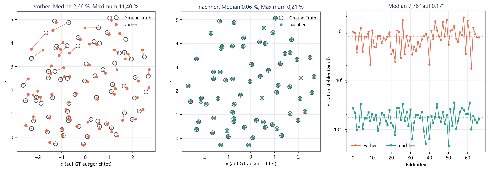
Der Abstand zu COLMAP ist damit klein geworden. Bei der Brennweite liegt die eigene Pipeline jetzt bei 0,59 % gegen 0,2 % von COLMAP, bei der Orientierung bei 0,174° gegen 0,11°. Von Größenordnungen kann keine Rede mehr sein; es bleibt ein Faktor von etwa anderthalb bis drei. Bei der Tracklänge bleibt der Abstand deutlicher: 3,10 gegen 4,69.
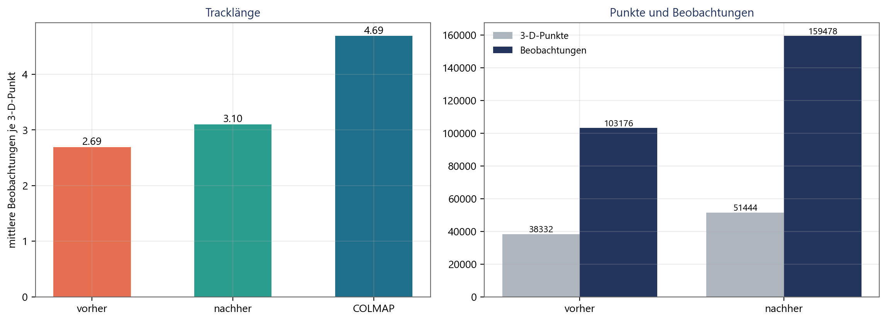
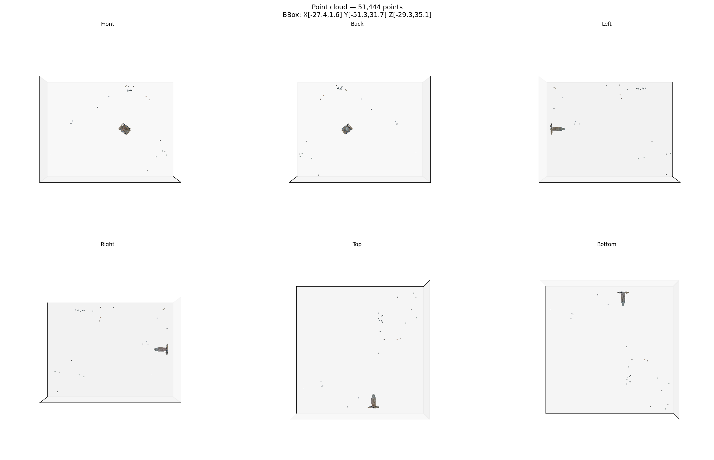
Ein Vorbehalt gehört dazu. Die Brennweitensuche verwendet keine Ground-Truth-Information, wohl aber die Annahme, dass der wahre Wert im abgesuchten Bereich liegt; der Bereich umspannt hier den Faktor 0,45 bis 1,75 um die Ausgangsschätzung. Eine Kamera mit extremem Bildwinkel würde außerhalb liegen. Die Suche meldet in diesem Fall lediglich den besten Randwert, ohne zu warnen, dass das Optimum nicht eingeschlossen war.
| Lauf | Kameras | Punkte | Beobachtungen | RMSE (px) | Brennweite (px) | SHA-256 der Punktwolke |
|---|---|---|---|---|---|---|
| 1 | 20 | 12.491 | 30.188 | 0,7579 | 1.891,74 | 49bf0fedf4361e50… |
| 2 | 20 | 12.491 | 30.188 | 0,7579 | 1.891,74 | 49bf0fedf4361e50… |
| 3 | 20 | 12.491 | 30.188 | 0,7579 | 1.891,74 | 49bf0fedf4361e50… |
--seed 0. Die
exportierten Punktwolken sind byte-gleich.Die frühere Fassung maß bis zu 57 % Streuung in der Kamerazahl zwischen byte-identischen Aufrufen. Geprüft wird jetzt nicht Ähnlichkeit, sondern Gleichheit: gleiche Kamerazahl, gleiche Punktzahl, gleiche Beobachtungszahl, gleicher Reprojektionsfehler und dieselbe Prüfsumme der exportierten Punktwolke.
| Konfiguration | Registrierte Kameras | Punkte | Rotationsfehler, Median | Positionsfehler, Median |
|---|---|---|---|---|
| ohne Schleifenschluss | 14 von 20 | 7.426 | 0,20° | 0,08 % |
| mit Schleifenschluss | 20 von 20 | 12.491 | 0,54° | 0,18 % |
Auf dem vollständigen Datensatz registriert die Pipeline in jeder Konfiguration alle 67 Kameras, so dass der Schleifenschluss dort nichts zu tun hat. Der Nutzen zeigt sich auf der ausgedünnten Bildmenge, wo die Registrierung ohne ihn stehen bleibt, sobald kein Bild mehr genügend 2D-3D-Korrespondenzen hat.
| Stufe | frühere Messreihe, seriell | Referenzlauf dieser Fassung |
|---|---|---|
| Merkmalsextraktion | 41,8 s | 45,6 s |
| Matching, erschöpfend | 1.036,6 s | 285,8 s |
| Verifikation | 8,7 s | 12,0 s |
| Rekonstruktion mit Bundle Adjustment, beide Durchläufe | 38,2 s | 1.593,7 s |
| Brennweitensuche und Schleifenschluss | nicht vorhanden | 15,1 s |
| dichte Rekonstruktion | 300,6 s | 25,9 s |
| Oberfläche | nicht vorhanden | 49,1 s |
| Export | 8,0 s | 11,7 s |
Die Parallelisierung der Paarschleife ist der einzige Eingriff, der die Laufzeit senkt, und sie tut es deutlich. Alle anderen Änderungen kosten Zeit; die teuerste ist die Konditionierung des Bundle Adjustment, die auf diesem Datensatz keinen messbaren Nutzen bringt.
Der Buddha-Datensatz enthält kein planares Bildpaar, so dass sich die Änderung an ihm nicht prüfen lässt. Geprüft wird sie deshalb an einer synthetischen Szene mit bekannter Pose: 800 Punkte, einmal exakt in einer Ebene und einmal in einer Schicht endlicher Dicke, aufgenommen aus zwei Ansichten mit 12° Winkelunterschied und 0,3 px Messrauschen.
| Szene | Homographie-Rückfall | Paar angenommen | Inlier | Rotationsfehler | Fehler der Translationsrichtung |
|---|---|---|---|---|---|
| planar | aus | nein | nicht bestimmt | nicht bestimmt | nicht bestimmt |
| planar | an | ja | 758 | 0,01° | 0,01° |
| volumetrisch | aus | ja | 797 | 0,00° | 0,00° |
| volumetrisch | an | ja | 797 | 0,00° | 0,00° |
eval/planar_check.py).Ohne die Änderung wird das planare Paar verworfen und trägt nichts zur Rekonstruktion bei. Mit ihr überlebt es mit 758 Inliern, und die aus der Homographie gewonnene Pose trifft die wahre Rotation auf 0,01° und die Translationsrichtung auf 0,01°. Auf der nicht planaren Szene ändert sich nichts, was die zweite Hälfte der Aussage ist: Der neue Weg wird nur dort betreten, wo der alte aufgegeben hätte.
Der Datensatz trägt kein EXIF, weshalb auf ihm nur der Fall „nichts vorhanden” auftritt und die Brennweitensuche greift. Die drei EXIF-Wege sind deshalb mit erzeugten Dateien geprüft, je eine pro Weg, gegen den analytisch bekannten Sollwert; dazu kommt eine Datei mit einem unplausiblen Eintrag und eine ohne EXIF.
| Fall | greifender Weg | Ergebnis |
|---|---|---|
FocalLengthIn35mmFilm vorhanden |
Umrechnung über die Sensordiagonale | Sollwert auf 1e−9 genau |
| Brennweite und Auflösung der Sensorebene | Umrechnung über das Pixelraster | Sollwert auf 0,2 % genau |
| Brennweite und bekanntes Kameramodell | Sensorbreite aus der Tabelle | Sollwert exakt |
| Brennweite impliziert 1° Bildwinkel | keiner | verworfen, Rückfall auf die Suche |
| kein EXIF | keiner | verworfen, Rückfall auf die Suche |
tests/test_exif_focal.py).Die Oberflächenstufe arbeitet auf der dichten Punktwolke, und die Prüfung dieser Stufe hat zuerst einen Defekt in ihrer Eingabe zutage gefördert. Er war in der früheren Fassung nicht aufgefallen, weil dort nur die Punktzahl der dichten Wolke berichtet wurde, nie ihre Lage.
Die dichte Stufe suchte Disparitäten in einem fest verdrahteten Fenster von 0 bis 256 px. Nach der Rektifizierung liegt die Disparität eines Punktes im Abstand Z bei d = f · B / Z. Bei den Basislinien dieser Aufnahmen und einem Objektabstand von rund zwei Einheiten ergibt das mehrere hundert bis mehrere tausend Pixel. Das Fenster lag also vollständig neben den tatsächlichen Werten, und ein Blockmatcher kann keinen Treffer melden, den er nie gesucht hat. Kleine Disparität bedeutet große Tiefe, und so landete die dichte Wolke weit hinter der Szene: Auf dem 67-Bild-Lauf vom August lagen 99,9 % der dichten Punkte außerhalb des Dreifachen des Radius der dünnen Wolke, bei einer Ausdehnung von 15.061 Einheiten gegen 3,9 Einheiten der dünnen Wolke.
Behoben ist das durch drei zusammengehörige Änderungen. Das Suchfenster wird jetzt aus der Szene abgeleitet: Die dünne Wolke wird in die Kamera projiziert, aus ihrem Tiefenbereich folgt der Disparitätsbereich, und dieser wird auf ein Vielfaches von 16 gerundet. Da der Speicherbedarf des Matchers mit Breite mal Höhe mal Suchbereich wächst, wird das Paar auf diejenige Auflösung skaliert, bei der die Rechnung in das Budget passt; das Verhältnis von Disparität zu Bildbreite bleibt dabei unverändert, weshalb die Geometrie davon nicht berührt ist. Und Paare, deren Suchfenster breiter wäre als das Bild, sind für rektifiziertes Blockmatching ungeeignet und werden mit Begründung übersprungen, statt einen negativen Speicherbedarf anzufordern.
Danach liegt die dichte Wolke dort, wo das Objekt ist. Von 337.636 Punkten liegen 100 % innerhalb des Dreifachen und 51 % innerhalb des einfachen Radius der dünnen Wolke. Die Stufe ist damit geometrisch gesund, bleibt aber schwach: Auf diesen weiten Basislinien findet rektifiziertes Blockmatching wenig, und ein erheblicher Teil der gefundenen Punkte gehört zu Tisch und Umgebung statt zum Objekt.
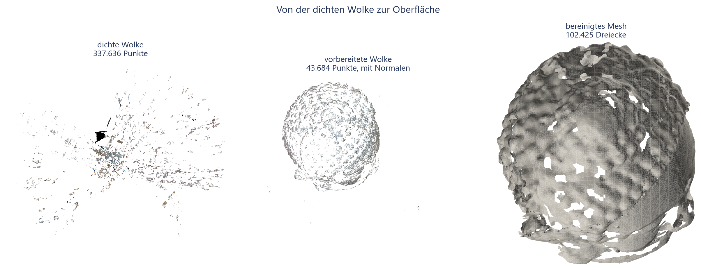
Aus der dichten Wolke entsteht kein brauchbares Modell: Das Mesh zerfällt in 298 Komponenten, von denen die größte 6,9 % der Dreiecke hält, und die Prüfung gibt das Urteil FAIL. Die Ursache liegt nicht in der Oberflächenstufe, sondern in ihrer Eingabe; eine Wolke, in der das Objekt neben Tisch, Wand und Fehltriangulierungen nur einen Teil ausmacht, ergibt eine Fläche, die überall ein bisschen und nirgends zusammenhängend ist.
Brauchbar wird das Modell aus der dünnen Wolke des Referenzlaufs, also aus den 51.444 Punkten, die die Rekonstruktion selbst als verlässlich ausgewiesen hat. Sie ist zwar dünner, aber sauberer, und sie deckt das Objekt gleichmäßig ab.
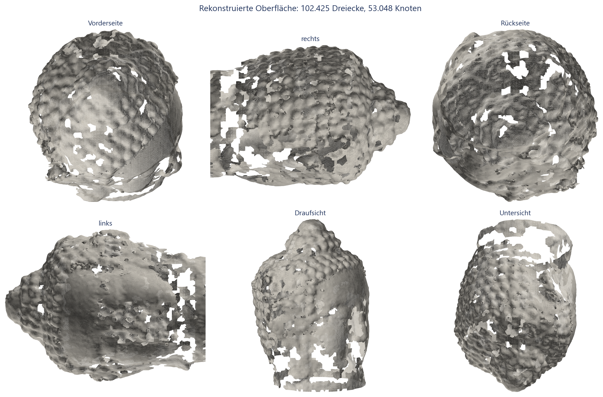
| Kennzahl | Wert |
|---|---|
| Dreiecke | 102.425 |
| Knoten | 53.048 |
| Komponenten | 1, mit 100 % der Fläche |
| kantenmannigfaltig | nein |
| wasserdicht | nein, 3.903 Randkanten |
| Euler-Charakteristik | −114 |
| Median des Seitenverhältnisses der Dreiecke | 1,27 |
| Anteil schlanker Dreiecke, Seitenverhältnis über 10 | 3,3 % |
| Abstand Fläche zu Wolke, Median | 3,29 Punktabstände |
| Abstand Fläche zu Wolke, 95-Prozent-Quantil | 10,96 Punktabstände |
| Abdeckung der Wolke, drei Punktabstände | 98,7 % |
| Abdeckung der Wolke, ein Punktabstand | 91,7 % |
| Anteil extrapolierter Fläche | 47,9 % |
| Abstand zur Referenzrekonstruktion, Median | 2,88 Punktabstände |
| Urteil der eingebauten Prüfung | WARN |
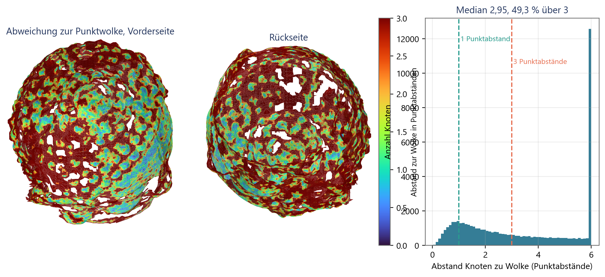
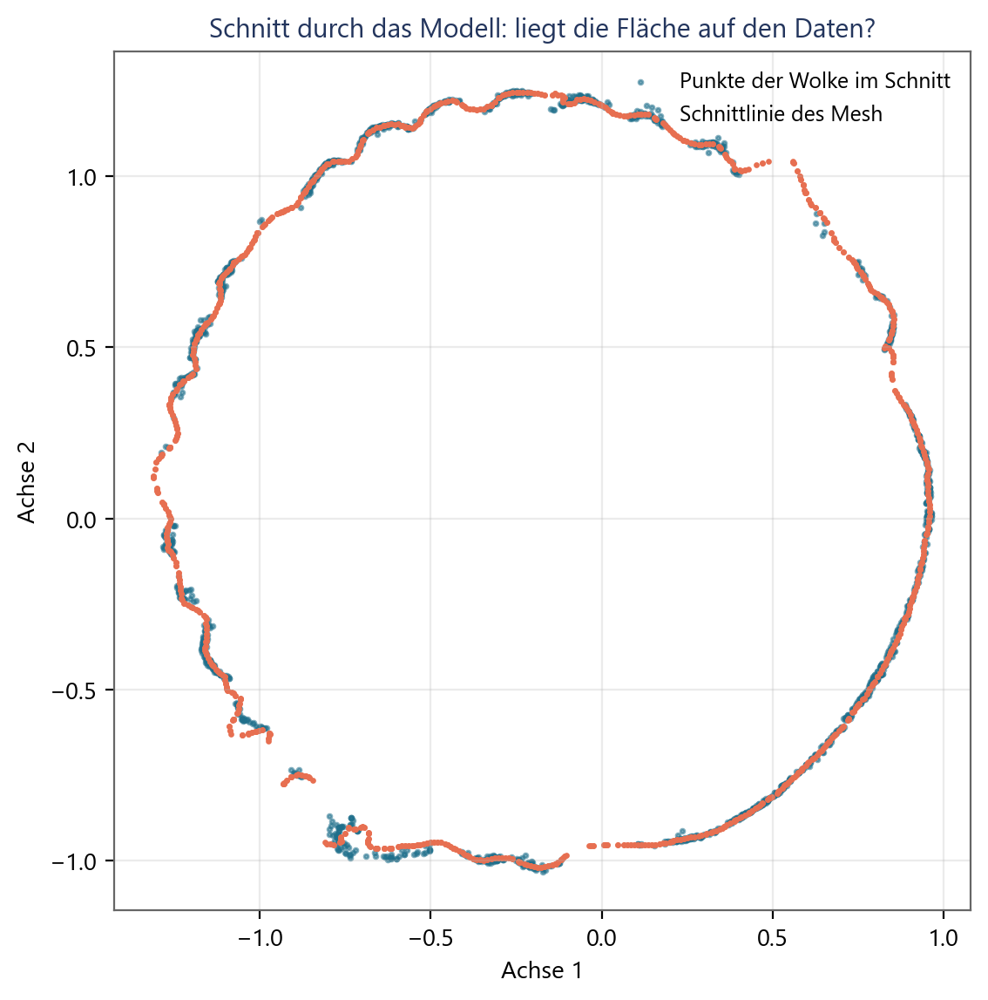
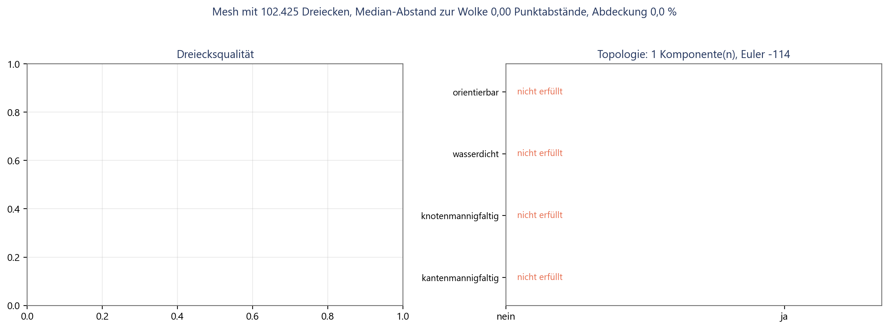
Der Datensatz liefert keine Referenzoberfläche, weshalb hier kein Abstand zur Wirklichkeit in Millimetern steht. Was sich prüfen lässt, sind zwei Dinge.
Gegen eine Referenzrekonstruktion. Die Pipeline lief zusätzlich mit vorgegebener Ground-Truth-Kalibrierung und lieferte 51.537 Punkte bei einer Brennweite von exakt 1.860,9 px. Gegen diese Referenzwolke, in dasselbe Koordinatensystem gelegt, liegt das Mesh mit einem Medianabstand von 0,0101 Einheiten, also 2,88 Punktabständen; 89,5 % der Referenzpunkte liegen innerhalb von drei Punktabständen an der Fläche. Die verbleibende Abweichung ist damit von der Größenordnung des Punktabstands selbst und nicht von der Größenordnung des Objekts.
Photometrisch unter den Ground-Truth-Posen. Diese Prüfung ist gescheitert, und das Ergebnis wird berichtet, weil es eine Aussage über die Methode enthält. Gemessen wurde die Streuung der Farbe eines Oberflächenpunktes über alle Ansichten, die ihn unverdeckt sehen, gegen dieselbe Größe für Punkte, die um zehn und um dreißig Punktabstände entlang ihrer Normalen verschoben wurden.
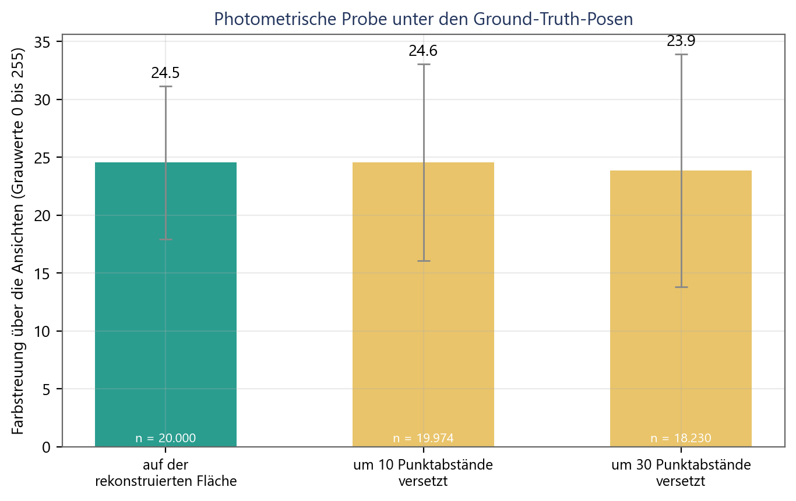
Der Grund ist die Beleuchtung. Die Aufnahmen entstanden in einem Raum mit gerichtetem Licht, und die Statue ist zwar matt, aber stark reliefiert; derselbe Punkt erscheint aus verschiedenen Richtungen unterschiedlich hell, weil die Noppen sich gegenseitig beschatten. Diese richtungsabhängige Schwankung ist größer als der Unterschied zwischen richtiger und um wenige Prozent des Objektradius falscher Geometrie. Eine photometrische Prüfung dieser Art braucht entweder diffuse Beleuchtung oder ein Ähnlichkeitsmaß, das Helligkeitsunterschiede herausrechnet, etwa eine normierte Kreuzkorrelation über Bildausschnitte. Als Qualitätsmaß taugt sie auf diesem Material nicht, und sie wird hier deshalb nicht als eines verwendet.
Von neun benannten Grenzen sind sechs behoben, drei teilweise. Die Wirkung verteilt sich aber höchst ungleich, und das ist das eigentliche Ergebnis dieses Beitrags: Eine einzige Zeile Code, die Brennweite aus der Bildgröße zu raten, hat den größten Teil des Genauigkeitsfehlers verursacht. Ihre Ersetzung durch drei EXIF-Wege und, wenn diese nichts liefern, durch eine Suche über Kandidatenbrennweiten senkt den Orientierungsfehler um den Faktor 49 und kostet 9 s Rechenzeit auf 67 Bildern.
Daraus folgt eine Lehre, die über dieses Projekt hinausreicht. Die aufwendigen Änderungen waren nicht die wirksamen. Die Konditionierung des Lösers ist die anspruchsvollste Arbeit dieses Berichts, sie ist theoretisch gut begründet, sie war im kontrollierten Experiment der früheren Fassung nachweislich der Unterschied zwischen 47 % und 6,9 % Brennweitenfehler, und auf dem echten Datensatz bringt sie allein nichts, weil dort ein anderer Fehler vorgelagert ist. Wer nur den Löser repariert hätte, hätte achtzehnmal mehr Rechenzeit für nichts bezahlt.
Die Tracks sind länger, aber noch nicht lang. 3,10 gegen 4,69 bei COLMAP. Die Messung im Trackgraphen selbst zeigt, woran es liegt: Der Graph, den die verifizierten Zuordnungen aufspannen, hat bereits eine mittlere Komponentengröße von etwa 2,4, und die Rekonstruktion holt daraus fast alles heraus. Die Grenze liegt also nicht mehr in der Buchführung der Rekonstruktion, sondern im Matching: Wo keine Zuordnung existiert, kann keine Kette entstehen. Der nächste Schritt wäre geführtes Matching, also eine zweite Matching-Runde, die die bereits bekannte Epipolargeometrie nutzt, um zusätzliche Korrespondenzen entlang der Epipolarlinien zu suchen.
Das Matching bleibt quadratisch. Die Parallelisierung senkt den Faktor, nicht die Ordnung. Für Datensätze jenseits einiger hundert Bilder bleibt eine inhaltsbasierte Vorauswahl der Bildpaare notwendig, und die verfügbaren Verfahren setzen PyTorch voraus.
Der Reprojektionsfehler bleibt als Qualitätsmaß blind. Er wird jetzt ehrlicher berichtet, vor und nach dem Ausreißerfilter, aber er kann eine falsche Kalibrierung weiterhin nicht anzeigen. Die Zahl akzeptierter Punkte ist das empfindlichere Signal und wird von der Brennweitensuche bereits genutzt; sie sollte auch im normalen Lauf ausgewiesen werden.
Die dichte Stufe ist repariert, aber schwach. Der Suchbereich der Disparität war fest verdrahtet und passte nicht zur Aufnahmegeometrie; das ist behoben, und die dichte Wolke liegt jetzt dort, wo das Objekt ist. Sie bleibt aber dünn, weil rektifiziertes Blockmatching auf so weiten Basislinien wenig findet und viele Paare gar nicht verwendbar sind. Ein echtes Mehrbildverfahren mit Tiefenkarten je Bild und photometrischer Konsistenzprüfung wäre der nächste Schritt.
Alle Messungen stammen von einem Datensatz und einer Maschine. Der Datensatz ist gutmütig, also dicht abgetastet und stark texturiert; die gemessenen Verbesserungen sind damit eher eine untere Schranke für das, was auf schwierigerem Material zu holen wäre, und die gemessenen Grenzen eher eine untere Schranke für die dort auftretenden Probleme.
Die Vorher/Nachher-Reihe vergleicht innerhalb einer Programmfassung, teilt sich Merkmale und Zuordnungen und ist damit frei von Matching-Rauschen. Sie ist aber nicht identisch mit der historisch gemessenen Ausgangslage, weil zwischenzeitlich auch Voreinstellungen geändert wurden, die nicht Gegenstand dieser Arbeit sind.
Die Bewertung der Oberfläche misst gegen die eigene Eingabe, gegen eine Referenzrekonstruktion und photometrisch gegen die Ground-Truth-Posen. Keine dieser Größen ist ein Abstand zur wahren Oberfläche, denn eine solche liefert der Datensatz nicht. Aussagen über die absolute Genauigkeit des Modells in Millimetern sind mit diesem Material nicht möglich und werden hier auch nicht getroffen.
Eine selbstgebaute SfM-Pipeline lässt sich mit überschaubarem Aufwand von „grob falsch” auf „nahe an einem Referenzsystem” bringen, wenn man zuvor gemessen hat, woran es liegt. Der Orientierungsfehler dieser Pipeline ist von 7,76° auf 0,174° gefallen, der Brennweitenfehler von 47,0 % auf 0,59 %, und COLMAP liegt mit 0,11° und 0,2 % nur noch knapp davor. Zwei identische Aufrufe liefern jetzt bitgleiche Ergebnisse.
Der Weg dorthin verlief nicht so, wie es die Aufwandsschätzung nahegelegt hätte. Die wirksamste Änderung war die billigste, die aufwendigste war auf diesem Datensatz wirkungslos, und der Schleifenschluss zeigt seinen Nutzen nur dort, wo die Bilddichte gering ist. Genau deshalb war die vorherige Messreihe die Voraussetzung: Ohne sie hätte die Arbeit an der falschen Stelle begonnen.
Für die Weiterarbeit ergibt sich folgende Reihenfolge.
[1] R. Hartley and A. Zisserman, Multiple View Geometry in Computer Vision, 2nd ed. Cambridge, U.K.: Cambridge University Press, 2003.
[2] J. L. Schönberger and J.-M. Frahm, “Structure-from-motion revisited,” in Proc. IEEE Conf. Computer Vision and Pattern Recognition (CVPR), 2016, pp. 4104-4113.
[3] Q.-Y. Zhou, J. Park, and V. Koltun, “Open3D: A modern library for 3D data processing,” arXiv:1801.09847, 2018.
[4] D. G. Lowe, “Distinctive image features from scale-invariant keypoints,” International Journal of Computer Vision, vol. 60, no. 2, pp. 91-110, 2004.
[5] D. Barath, J. Noskova, M. Ivashechkin, and J. Matas, “MAGSAC++, a fast, reliable and accurate robust estimator,” in Proc. IEEE/CVF Conf. Computer Vision and Pattern Recognition (CVPR), 2020, pp. 1304-1312.
[6] F. Bernardini, J. Mittleman, H. Rushmeier, C. Silva, and G. Taubin, “The ball-pivoting algorithm for surface reconstruction,” IEEE Transactions on Visualization and Computer Graphics, vol. 5, no. 4, pp. 349-359, 1999.
[7] R. B. Rusu, Z. C. Marton, N. Blodow, M. Dolha, and M. Beetz, “Towards 3D point cloud based object maps for household environments,” Robotics and Autonomous Systems, vol. 56, no. 11, pp. 927-941, 2008.
[10] M. A. Fischler and R. C. Bolles, “Random sample consensus: A paradigm for model fitting with applications to image analysis and automated cartography,” Communications of the ACM, vol. 24, no. 6, pp. 381-395, 1981.
[11] B. Triggs, P. F. McLauchlan, R. I. Hartley, and A. W. Fitzgibbon, “Bundle adjustment: A modern synthesis,” in Vision Algorithms: Theory and Practice, LNCS 1883, Berlin: Springer, 2000, pp. 298-372.
[12] N. Snavely, S. M. Seitz, and R. Szeliski, “Photo tourism: Exploring photo collections in 3D,” ACM Transactions on Graphics, vol. 25, no. 3, pp. 835-846, 2006.
[13] M. Muja and D. G. Lowe, “Fast approximate nearest neighbors with automatic algorithm configuration,” in Proc. Int. Conf. Computer Vision Theory and Applications (VISAPP), 2009, pp. 331-340.
[14] R. I. Hartley, “In defense of the eight-point algorithm,” IEEE Transactions on Pattern Analysis and Machine Intelligence, vol. 19, no. 6, pp. 580-593, 1997.
[15] P. H. S. Torr and A. Zisserman, “MLESAC: A new robust estimator with application to estimating image geometry,” Computer Vision and Image Understanding, vol. 78, no. 1, pp. 138-156, 2000.
[16] H. Hirschmüller, “Stereo processing by semiglobal matching and mutual information,” IEEE Transactions on Pattern Analysis and Machine Intelligence, vol. 30, no. 2, pp. 328-341, 2008.
[17] M. Kazhdan and H. Hoppe, “Screened Poisson surface reconstruction,” ACM Transactions on Graphics, vol. 32, no. 3, article 29, 2013.
[18] S. Umeyama, “Least-squares estimation of transformation parameters between two point patterns,” IEEE Transactions on Pattern Analysis and Machine Intelligence, vol. 13, no. 4, pp. 376-380, 1991.
[19] O. Faugeras and F. Lustman, “Motion and structure from motion in a piecewise planar environment,” International Journal of Pattern Recognition and Artificial Intelligence, vol. 2, no. 3, pp. 485-508, 1988.
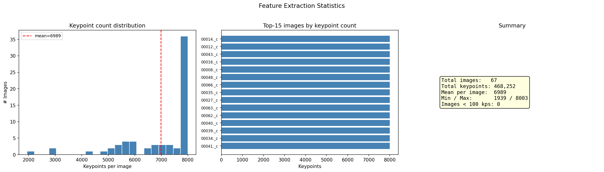
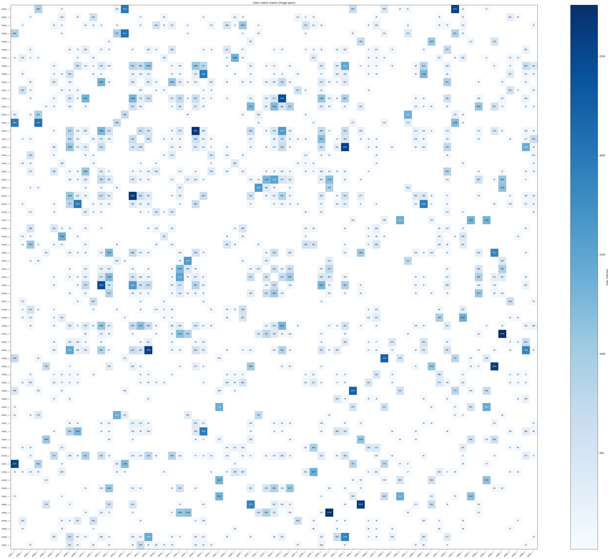
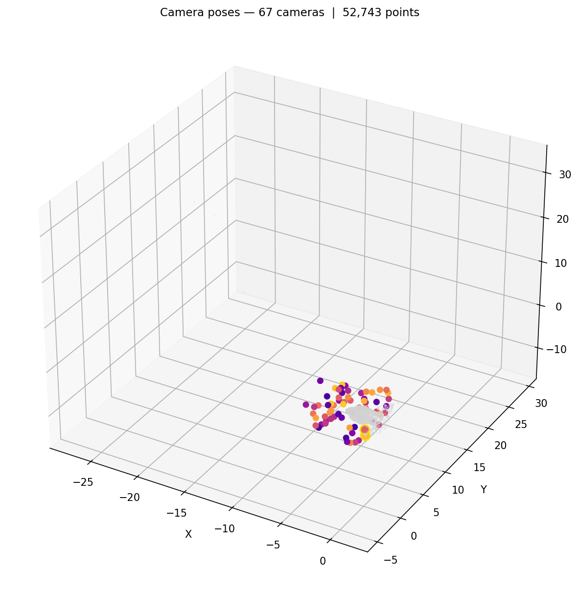
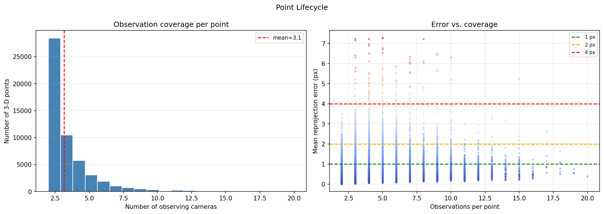
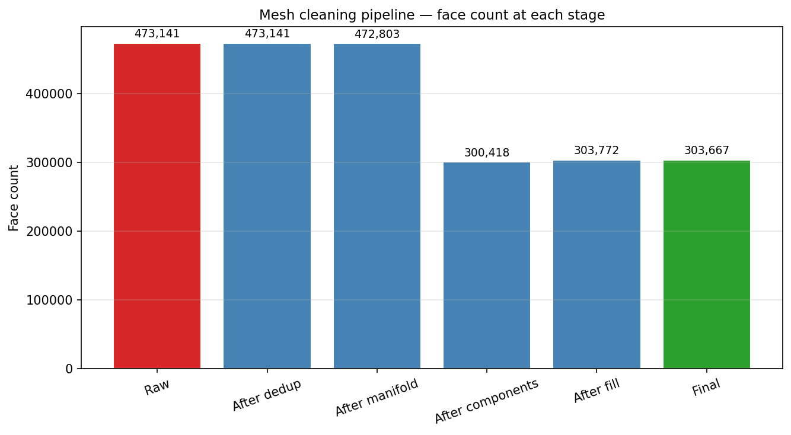
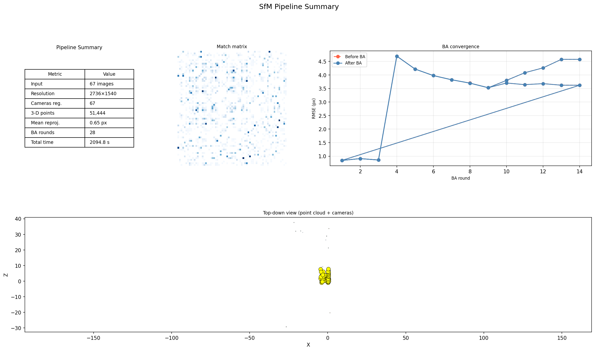
Alle Bilddateien liegen versioniert unter paper/figures/l2/. Die Bilder in
figures/l2/run/ stammen aus dem Referenzlauf dieser Fassung
(run_l2/viz_20260814_133940/), erzeugt mit --visualize. Die übrigen Abbildungen
entstehen mit paper/scripts/make_figures_l2.py aus den unten genannten Artefakten.
| Ergebnis | Skript oder Artefakt |
|---|---|
| Vorher/Nachher und Ablation | eval/fix_impact.py → eval_results/fix_impact_n67/ |
| Posen gegen Ground Truth | eval/gt_pose_eval.py |
| Reproduzierbarkeit | eval/reproducibility_check.py → eval_results/repro_n20/ |
| planare Szene | eval/planar_check.py → eval_results/planar_check.json |
| EXIF-Wege | tests/test_exif_focal.py |
| Mesh-Bewertung | eval/mesh_eval.py → eval_results/mesh_eval.json |
| Kennzahlen des Mesh | run_l2/mesh_final_quality.json |
| Ergebnis | Befehl |
|---|---|
| Referenzlauf mit allen Stufen | python run_sfm.py --image_dir <buddha67> --output sparse.ply --export-cameras cameras.json --n_features 8000 --seed 0 --dense --mesh --visualize |
| Vorher/Nachher-Reihe | python eval/fix_impact.py --image-dir <buddha67> --gt-dir <buddha> |
| Reproduzierbarkeit | python eval/reproducibility_check.py --image-dir <buddha20> --runs 3 |
| planare Szene | python eval/planar_check.py |
| Oberfläche aus der dünnen Wolke | python -m sfm.mesh sparse.ply -o mesh.obj --cameras cameras.json --quality medium --depth 8 --trim 6 --keep-largest |
| Mesh-Bewertung | python eval/mesh_eval.py --mesh mesh.obj --cloud mesh_prepared_cloud.ply --cameras cameras.json --gt-dir <buddha> --image-dir <buddha67> --reference ref.ply --reference-cameras ref.cameras.json |
| Diese Fassung als PDF | python paper/scripts/build_paper.py --md paper/paper_l2.md --pdf |
<buddha67> bezeichnet das Verzeichnis mit den
67 Bildern, <buddha> das Verzeichnis des Originaldatensatzes mit den
Ground-Truth-Dateien *_P.txt.Offene Punkte. Die Tracklänge bleibt hinter COLMAP zurück, und die Grenze liegt jetzt im Korrespondenzgraphen statt in der Rekonstruktion. Die dichte Stufe ist geometrisch gesund, liefert auf diesen weiten Basislinien aber wenig; ein Mehrbildverfahren mit Tiefenkarten wäre der nächste Schritt. Die photometrische Prüfung der Oberfläche ist auf diesem Material nicht aussagekräftig, weil die richtungsabhängige Beleuchtung stärker streut als der geometrische Unterschied.
Abweichungen gegenüber der früheren Fassung. Der Ausgangszustand in Tab. 6 stammt aus der aktuellen Programmfassung mit abgeschalteten Änderungen und weicht deshalb in den Nachkommastellen von den früher berichteten Werten ab; zwischenzeitlich wurden auch Voreinstellungen geändert, die nicht Gegenstand dieser Arbeit sind. Die COLMAP-Werte sind unverändert übernommen.
Zwischenstände der Oberflächenstufe. Abschnitt 6.9.3 vergleicht drei Meshes:
run_l2/mesh.obj aus der dichten Wolke, wie der Lauf sie selbst erzeugt,
run_l2/mesh_scene.obj aus der auf die Objektumgebung begrenzten dichten Wolke und
run_l2/mesh_final.obj aus der dünnen Wolke. Alle drei liegen samt Prüfbericht vor, damit
der Vergleich nachvollziehbar bleibt.
Umfang. Der gemessene Umfang dieser Fassung beträgt 22 Seiten bei 14 Abbildungen im Hauptteil, 6 im Anhang und 14 Tabellen.
Prüfung der Zahlen. python paper/scripts/check_numbers_l2.py rechnet 64 Werte dieses
Beitrags gegen die Artefakte nach und prüft zugleich Nummerierung und Schreibweise.
Umsetzung des Style Guide. Das Layout folgt
abstract/workshop_book_styleguide_2026/main.tex: A4 mit 2,5 cm Rand, Segoe UI, Fließtext
9 pt bei 14,4 pt Zeilenabstand im Blocksatz, Überschriften zentriert in Fett und in
GFaI-Blau, Tabellen im booktabs-Stil, Literatur im IEEE-Format, keine Seitenzahlen.